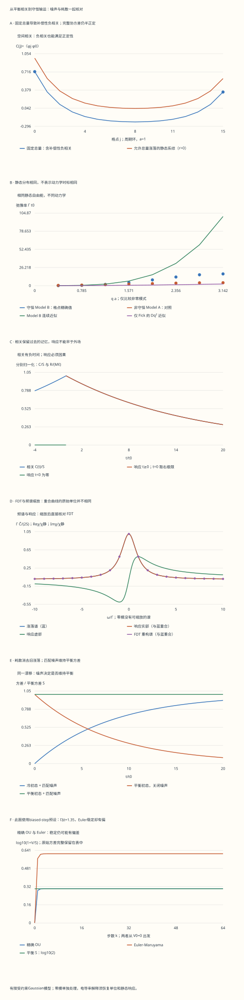

本页目录
- 学习层：一幅密度起伏图，为什么会消退，又为什么一直存在？
- 1. 先定义测量对象：平均值、关联与响应
- 2. 一个不会遗漏零模的有限周期环
- 3. 从 Gaussian 积分得到结构因子
- 4. 守恒不只是让平均值守恒：噪声也必须守恒
- 5. 解一个模式：扰动记忆消失，平衡方差保持
- 6. 相关函数与响应：推导出经典 FDT
- 7. 频率空间：面积、虚部与 \(2\pi\)
- 8. 零模与极限：为什么 \(\chi(0)\) 有时不是 \(1/r\)？
- 9. 从守恒流到扩散：什么时候只剩 \(Dq^2\)？
- 10. Einstein 关系：恢复单位后再谈电导率
- 11. 一个数值实验：稳定并不保证平衡分布正确
- 12. 八道自检：把结论和条件一起带走
凝聚态 IV · 关联函数、结构因子与扩散输运
前置：Green 函数、动理学与输运、矩阵对角化与 Gaussian 积分。
本页目标：从同一个有限模型算出空间相关、结构因子、因果响应、守恒弛豫和数值误差。静态关联告诉你“哪些位置一起涨落”，响应告诉你“施加外场后怎样改变”；二者通过明确的平衡条件联系。
学习层：一幅密度起伏图，为什么会消退，又为什么一直存在？
想象一圈装有液体、彼此连通的小格子。某一格暂时偏多，流动会把它抹平；但热运动不断制造新的小偏差。某次扰动的消退和平衡涨落的持续存在并不矛盾：前者描述记忆丢失，后者描述新噪声不断补入。
先比较三个实验：从没有涨落的状态打开噪声；从平衡态关闭噪声；从平衡态保留噪声。它们可以有完全相同的平均衰减率，却有不同的方差。下面不靠一条碰巧好看的随机轨迹下结论，而是计算每种实验的完整方差。
无脚本对照：六份固定记录含全部参数、完整L/H/A/Q/C/P矩阵、全部Fourier模式、加密时间采样、201个频率点、100个有限窗积分和65步方差递推。零模由固定总量约束移除；r=0仅在有限受约束环中解释。

| 预设 | N | m | 平衡方差S | Γ | ΓΔt | Euler状态 | Euler稳态方差 |
|---|---|---|---|---|---|---|---|
| default | 16 | 1 | 2.4860722 | 0.061237536 | 0.0061237536 | stable | 2.4937076 |
| zero | 16 | 0 | 0 | 0 | 0 | constrained-zero | 不适用 |
| critical | 16 | 1 | 6.5685356 | 0.023177302 | 0.0023177302 | stable | 6.5761565 |
| short | 16 | 8 | 0.23529412 | 17 | 1.7 | stable | 1.5686275 |
| biased-step | 16 | 4 | 0.44444444 | 4.5 | 1.35 | stable | 1.3675214 |
| unstable-step | 16 | 8 | 0.1 | 80 | 160 | unstable | 不适用 |
下载六份完整记录。stable仅表示均方稳定，未保证平衡方差无偏。constrained-zero表示固定总量的零模；unstable表示数值更新失稳，并非物理相变。频窗[-10Γ,10Γ]只包含约93.655%的非零模方差。
1. 先定义测量对象：平均值、关联与响应
设第 \(j\) 格的无量纲密度偏差为 \(\phi_j=n_j-\langle n_j\rangle\)。本页考虑平均为零的平衡态，因此 connected 关联就是
若没有先减去平均值，\(\langle n_i n_j\rangle\) 中的背景 \(\langle n_i\rangle\langle n_j\rangle\) 会混进来。它不表示两个位置之间传递了一个扰动。
相关也不是“从 \(j\) 跑到 \(i\) 的概率”。例如总密度固定时，某处偏多必须由别处偏少补偿，远处相关可以为负。正确的正性要求是：任何实线性组合 \(Y=\sum_i v_i\phi_i\) 都满足
外场响应则需要一次干预。把自由能加入 \(-\sum_j h_j(t)\phi_j\)，定义
这里的 \(R\) 是脉冲响应核；恒定外场的最终响应还需要对它积分。\(\langle\phi_i(t)\phi_j(0)\rangle\) 可以在负时间非零，因果响应不能先于干预。
读图动作：实验中先选“默认”，看相关与响应图。正时间两条归一化曲线重合，负时间只有相关继续存在。这种重合来自本页模型及涨落耗散关系，不能把两个量的原始单位混为一谈。
2. 一个不会遗漏零模的有限周期环
取 \(N\) 个格点，格距 \(a=1\)，下标按模 \(N\) 循环。能量以 \(E_0\)、时间以 \(t_0\) 计，\(\Theta=k_BT/E_0\)。本页所有数值计算都使用这些无量纲量。
定义正半定的格点 Laplacian
它近似 \(-\partial_x^2\)，不是 \(\partial_x^2\)；这个符号决定后面的动力学是否衰减。取二次自由能
即局部偏差代价 \(\frac r2\sum_j\phi_j^2\) 加上梯度代价 \(\frac\kappa2\sum_j(\phi_{j+1}-\phi_j)^2\)。规定 \(r\ge0,\kappa>0,\Theta>0\)，并固定总量
平衡分布是这个 \(N-1\) 维子空间上的 \(\exp(-\mathcal F/\Theta)\)。即使 \(r=0\)，有限环的非零模式仍有正能量代价，约束后的分布可以归一化。这不保证 \(N\to\infty\) 时涨落有限，也不把一个高斯有限模型称为已完成的真实临界理论。
3. 从 Gaussian 积分得到结构因子
采用单位归一 Fourier 变换
实场满足 \(\phi_{N-m}=\phi_m^*\)。格点本征值和自由能刚度分别是
对每个非零实正交模式，Gaussian 积分或均分定理给出
最后一项来自总量约束，不能直接把 \(m=0\) 代入 \(\Theta/h_m\)。反变换得到
成对模式使 \(C(j)\) 为实数。实验保留完整 \(C_{ij}=C(i-j)\) 矩阵；它可以有负的非对角元素，但本征值就是非负的 \(S_m\)。
为了画一条实随机变量的时间曲线，实验选用归一化余弦坐标 \(Y_m=\sum_j v_j\phi_j\)。普通模式取 \(v_j=\sqrt{2/N}\cos(q_mj)\)，其方差也是 \(S_m\)。偶数 \(N\) 的 Nyquist 模式 \(m=N/2\) 要改成 \(v_j=(-1)^j/\sqrt N\)；它没有独立的正弦伙伴。零模 \(v_j=1/\sqrt N\) 被约束为零。
4. 守恒不只是让平均值守恒：噪声也必须守恒
令 \(B\) 把格点量变成相邻格差，约定 \((B\phi)_j=\phi_{j+1}-\phi_j\)，于是 \(L=B^{\mathsf T}B\)。化学势样变量为 \(\boldsymbol\mu=H\boldsymbol\phi-\mathbf h\)。取迁移率 \(M>0\)，沿边的确定性流由化学势差驱动。
在每条边上加入独立标准 Wiener 增量 \(dW_j\)，得到
随机通量的正方向可以整体换号而不改变协方差。关键是 \(B\mathbf1=0\)：每一次噪声增量的总和都为零。若直接给每个格点加入独立噪声，通常会破坏这个固定总量条件。
定义漂移矩阵和噪声协方差
在平衡态，协方差满足 Lyapunov 方程
本页的 \(C\) 来自第 3 节的 Gaussian 分布，并且满足此式。换言之，噪声强度不是为了“让图动起来”随意选的；它与耗散共同维持指定温度的平衡分布。
守恒与非守恒模型可以具有同一静态自由能，却有不同噪声算符和弛豫率。这里沿用 Gaussian Model B 的基本设置；Kardar 的原始课程讲义把它与 Model A 对照，并提醒真实流体还可能有额外守恒量。MIT 讲义，§I.B–I.C
5. 解一个模式：扰动记忆消失，平衡方差保持
对任一非零实正交模式，动力学化为 Ornstein–Uhlenbeck 方程
此处模式刚度 \(h=r+\kappa\ell\) 与时间依赖外场 \(f(t)\) 的角色不同：前者是自由能曲率，后者是外部源；模式表给出刚度与噪声功率，源系数由迁移率乘Laplacian本征值得到。令外场为零，积分因子给出
因此平均值按 \(e^{-\Gamma t}\) 衰减，而方差满足
三种实验现在可以逐项核对：
| 条件 | 方差 |
|---|---|
| 无涨落初态 \(V(0)=0\)，保留噪声 | \(S(1-e^{-2\Gamma t})\) |
| 平衡初态 \(V(0)=S\)，保留噪声 | \(S\) |
| 平衡初态，之后关闭噪声 | \(Se^{-2\Gamma t}\) |
默认 \(N=16,m=1,r=0.25,\kappa=M=\Theta=1\)，有 \(\ell=4\sin^2(\pi/16)\approx0.15224\)、\(h\approx0.40224\)、\(S\approx2.4861\)、\(\Gamma\approx0.06124\)。时间常数约 \(16.33t_0\)，所以只看前 \(t_0\) 的图，衰减并不明显；这不是程序没有工作。
6. 相关函数与响应：推导出经典 FDT
平衡初态下，未来噪声与 \(Y(0)\) 无关，故
对外场求线性变化，从同一个解得到
响应图在 \(t=0\) 采用右极限 \(b\)；积分不受单点取值影响。对正时间求相关的导数，
因为 \(\Gamma S=\Theta b\)。这就是该经典平衡模型的涨落耗散关系。
不要省略假设：这是平衡、线性、经典 Gaussian 动力学，外场按自由能中的 \(-hY\) 耦合。主动驱动、非平衡稳态或量子算符的非对易性，都可能要求另一套关系。负时间相关非零也不表示信息可以向过去传播。
7. 频率空间：面积、虚部与 \(2\pi\)
时间 Fourier 约定为
脉冲响应的变换记为 \(\chi(\omega)\)。直接积分可得
于是
在 \(\omega=0\) 用连续极限 \(2\Theta b/\Gamma^2\)，不能让程序直接算 \(0/0\)。这里的涨落谱是双边频谱；若换成只积分正频率的定义，必须一起修改因子。
全轴和规则与有限窗质量分别是
实验画到 \(|\omega|\le10\Gamma\)，只包含约 \(93.655\%\) 的方差质量。它没有丢失归一化，而是仍有尾部在图窗外。频谱图的纵轴另作明确缩放，原始数值及实际频率在表中完整保留。
量子情形的非对称关联谱带有热占据因子；在低频经典极限才回到这里的 \(2k_BT/\omega\) 关系，不能把本页 Lorentzian 直接当成任意量子结构因子。Tong，线性响应 §4.3.2
8. 零模与极限：为什么 \(\chi(0)\) 有时不是 \(1/r\)？
本实验严格固定总量，所以 \(Y_0=0\)、\(S_0=0\)，均匀外场的自由能项 \(-h_0Y_0\) 恒为零。因而零模响应也为零。归一化相关 \(C/S\) 和频率坐标 \(\omega/\Gamma\) 不适用，界面留空，表中明确标出占位频率。
若改为允许总量涨落的静态系综，且 \(r>0\)，则零模方差是 \(\Theta/r\)。它给每个空间相关增加同一个常数：
但在封闭的守恒动力学中，这个随机初始总量仍不随时间变化。它的频谱是零频 \(\delta\) 质量，不会像非零模式一样弛豫。若要让均匀外场重新调整总量，还必须增加与粒子库交换的动力学；当前实验没有做这件事。
连续长波表达式也提醒我们极限顺序的作用：
对 \(r>0\)，先令 \(\omega\to0\) 再沿非零 \(q\to0\) 得到 \(1/r\)；先沿非零 \(\omega\) 令 \(q\to0\) 得到零。有限环的严格零模又受到指定系综约束。写“静态压缩率”时必须说明可交换什么、如何取极限。
9. 从守恒流到扩散：什么时候只剩 \(Dq^2\)？
精确格点弛豫率是
当 \(|q|a\ll1\) 时 \(\ell(q)\simeq q^2\)；若还满足 \(\kappa q^2\ll r\)，则
少了第二个条件，即使波长相对格距很长，也可能仍要保留梯度项。\(r=0\) 的本页 Gaussian 模型给出 \(\Gamma_B\simeq M\kappa q^4\)；这是此可解模型的结果，不是对所有相变动力学宣称指数都等于 \(4\)。
在相同非零模静态自由能下，非守恒 Model A 给出 \(\Gamma_A=M(r+\kappa\ell)\)，它没有额外的 \(\ell\) 因子。实验只比较非零模式，不把 Model A 的均匀模当成满足本页总量约束的运动。
观察静态相关长度也不能直接读出输运速度：连续近似中 \(\xi=\sqrt{\kappa/r}\)，改变 \(M\) 不改变 \(\xi\)，却会改变所有弛豫时间。大波数、短波长时格点修正首先显著；不要把这说成“小波数先失效”。
局部扰动表使用 \(\phi_j(0)=\delta_{j0}-1/N\)，于是任何时刻总和仍为零：
这是一份密度偏差的响应轮廓，可以为负。对于含四阶梯度项的场方程，也不应把每个值解释成单粒子转移概率。
10. Einstein 关系：恢复单位后再谈电导率
在具有物理单位的连续介质中，设粒子数流满足 \(\mathbf j_n=-\mathcal M\nabla\mu\)，静态密度响应为 \(\chi_n=\partial n/\partial\mu\)。在局部线性区间，\(\delta\mu=\delta n/\chi_n\)，所以
若每个载流子电荷为 \(q_e\)，静电势为 \(\Phi\)，电化学势包含 \(q_e\Phi\)。在均匀背景中 \(\mathbf E=-\nabla\Phi\)，电流 \(\mathbf j_e=q_e\mathbf j_n\) 的外场部分为
这里的 \(\mathcal M\) 必须带上密度、长度、能量与时间的单位；实验的 \(M\) 是无量纲模型参数，不能直接贴上 \(\mathrm{S/m}\) 标签。理想稀薄经典气体有 \(\chi_n=n/(k_BT)\)，才得到熟悉的 \(\sigma=nq_e^2D/(k_BT)\)。相互作用体系一般应使用实际压缩率。
上述关系还预设扩散型局部响应。动量守恒的洁净体系、弹道输运、多个耦合守恒量、Hall 响应及量子相干修正可能需要矩阵形式或额外项。微观电流关联与接触项留到 Kubo 与输运；本页没有从电子 Hamiltonian 算出完整电导率。
11. 一个数值实验：稳定并不保证平衡分布正确
模式的精确离散转移可直接从第 5 节积分得到：
不同步的 \(\zeta_k\) 独立、均值为零且为 Gaussian。任意正步长下，这个更新都保持平衡方差 \(S\)；但很大的步长仍会漏掉两个采样时刻之间的动力学细节。
Euler–Maruyama 则用
令 \(x=\Gamma\Delta t\)。其均方稳定条件为 \(0<x<2\)，满足条件时稳态方差却是
例如 \(x=1\) 时，均值每步就被完全抹去，但稳态方差是正确值的两倍。\(x=2\) 时确定性振幅不衰减，噪声方差不断累加；\(x>2\) 则出现数值失稳。这些不是新的物理相变。
实验从 \(V_0=0\) 递推 \(64\) 步，保留所有原始方差。第六图使用 \(\log_{10}(1+V/S)\)，以容纳失稳时极大的数值；纵轴不再是原始方差，不能用图上高度直接读取倍数。选“Euler 稳定但方差明显偏大”，再减小步长，检查偏差是否按公式消失。
实验记录建议：记录 \(N,m,r,\kappa,M,\Theta,\Delta t\)；写出预计的 \(x\)、稳定状态和方差比；再下载当前记录核对。单条随机轨迹的起伏不能代替多次试验方差，而本实验直接给出解析方差及离散递推账。
12. 八道自检：把结论和条件一起带走
1 · 为什么固定总量的 C(j) 可以为负？这是否违反结构因子正性？
总和约束给 \(\sum_jC(j)=0\)。若局部方差 \(C(0)>0\)，其余位置必须合计为负。正性要求针对二次型 \(\sum_{ij}v_iC_{ij}v_j\)，而不是每个矩阵元素。Fourier 对角化后，此二次型是 \(\sum_m S_m|v_m|^2\ge0\)。因此空间负相关与非负结构因子完全相容。
2 · 证明噪声既守恒，又保持 Gaussian 平衡协方差。
因为 \(B\mathbf1=0\)，有 \(\mathbf1^{\mathsf T}B^{\mathsf T}dW=0\)。漂移也满足 \(\mathbf1^{\mathsf T}L=0\)。在非零模式上，\(C_m=\Theta/h_m\)、\(A_m=M\ell_mh_m\)，所以 \(2A_mC_m=2\Theta M\ell_m=Q_m\)。零模三者均为零。因此矩阵式 \(AC+CA^{\mathsf T}=Q\) 成立，Gaussian 分布在受约束空间上保持不变。
3 · 把温度加倍，与把迁移率加倍，有什么不同？
保持 \(r,\kappa\) 不变时，\(S=\Theta/h\) 随温度加倍，\(\Gamma=M\ell h\) 不变。把 \(M\) 加倍时，\(\Gamma\) 和噪声功率 \(Q\) 都加倍，\(S\) 不变。前者改变静态方差，后者加快同一个平衡分布的采样和弛豫。这里把自由能参数视为温度不变；真实材料的有效参数可能也随温度改变。
4 · 默认频窗为什么只有约 93.655% 的方差？
积分 \(\widetilde C=2S\Gamma/(\omega^2+\Gamma^2)\) 时必须使用 \(d\omega/(2\pi)\)。令 \(u=\omega/\Gamma\)，窗内比例为 \((1/\pi)\int_{-10}^{10}du/(1+u^2)=2\arctan(10)/\pi\)。其余约 \(6.345\%\) 在尾部。把图上的曲线重新归一到面积一，会抹掉这个可检验的有限窗效应。
5 · r=0 后，有限环为什么仍可计算？增大 N 又会怎样？
零模已被移除，剩余最小 \(\ell_1=4\sin^2(\pi/N)>0\)，所以每个 \(S_m=\Theta/(\kappa\ell_m)\) 都有限。随着 \(N\) 增大，\(\ell_1\sim(2\pi/N)^2\)，最低模方差增长、弛豫率 \(\Gamma_1\sim M\kappa(2\pi/N)^4\) 减小。有限 \(N\) 的合法计算不能推出无限系统具有有限局部涨落。这个模型还没有非 Gaussian 相互作用和临界重整化。
6 · 固定总量的零模响应是零，为什么静态压缩率还常写成 1/r？
它们指向不同操作。对本页封闭环施加均匀源，不会改变严格固定的总量。\(1/r\) 则可来自允许改变总量的静态平衡问题，或先取非零波数的静态响应再令波数趋零。若初始总量随机但动力学仍封闭，该总量只作为不变的初始随机变量存在，不能自动获得对之后外场的重新平衡能力。
7 · Euler 取 x=1.35 时，稳态方差比是多少？应如何改进？
稳定条件 \(0<x<2\) 成立，但 \(V_{\mathrm{EM}}/S=1/(1-0.675)\approx3.076923\)。先减小 \(\Delta t\)，观察比值趋向一；或者使用本页精确 OU 更新。只有均值衰减正确、轨迹不爆炸，并不足以证明热平衡分布正确。精确模式更新适用于此线性 Gaussian 问题，不能直接照搬给一般非线性方程。
8 · 什么时候可以由扩散系数直接写电导率？
先明确扩散的是哪个带电守恒密度，确认局部扩散响应成立，恢复单位，并给出对应静态响应 \(\chi_n\)。此时 \(\sigma=q_e^2D\chi_n\)。只有理想稀薄经典气体才可进一步用 \(\chi_n=n/(k_BT)\)。没有压缩率、载流子电荷及模型适用条件，仅知道相关长度或一个衰减时间，不足以决定电导率。
完成后应能独立说明：为什么负空间相关并不违反正性；为什么确定性扩散不足以维持热涨落；为什么固定总量时必须特殊处理零模；以及为什么数值稳定仍需检查平衡方差。进一步学习可转到 涨落定理、Kubo 与输运 和 主动与非平衡物质，逐步放松本页的线性、Gaussian 与平衡假设。